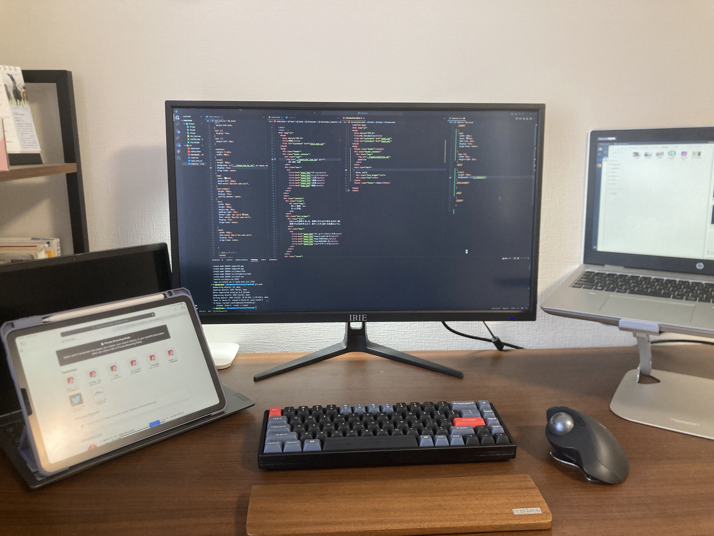

人工衛星プロジェクト
九州工業大学と九州大学が共同で開発しているプロジェクトです。衛星に搭載されているカメラでオーロラを撮影し、撮影された画像を地上に送信するミッションを任されています。
運用プログラムは完成し、現在はデバッグ作業を行っています。
2024/6に打ち上げ予定です。
詳しい内容は今後更新します。

地上磁場観測データのシステム構築
九州大学国際宇宙惑星環境研究センターが使用しているデータをウェブ上に公開して誰でも利用できるような、システムを構築する研究を行っています。 現段階ではまだ本格的には行っていないので、進捗があったら更新したいと思います。